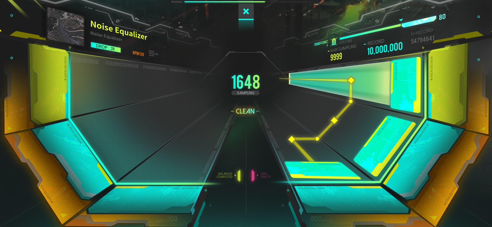

ROBERT LI > NOISE EQUALIZERtechnical game designer |
|||
| Discord |
Noise Equalizer - Ukiyo is a rhythm game launching on iOS and ipadOS.
The story sets in the Spark region of East Asia in the year 2096. At that time, a plethora of technologies such as data alchemy, fusion engines, and three-dimensional cities brought unprecedented enjoyment and comfort to urban humans at the end of the 21st century.
With a desire for ancient ruins and a disdain for mundane daily life, two girls, Momoya and Sue, break away from ordinary city life and embark on a series of science fiction adventures, meeting various people along the way.
In addition to dealing with the harsh urban environment and the threat of armed groups, they also need to filter out the "noise" unique to the information explosion of that era to maintain their self-will. With their lipstick and confusion left behind, the journey has already begun...

Challenge 1: Performance Issues During testing, we discovered that the game would crash on some of the older devices due to the lack of optimization on the game assets since we have many Cyberpunk style animations and effects. With the usage of Unity Memory Profiler, I was able to work with the artist to minimize the memory usage of the effects and animations.
Challenge 2: Developing Tools for Composers We didn't want our composers to get on Unity in order to design their note patterns for their songs. So we developed a note patter editor tool with PyQT. The tool exports both .json and .txt styles of note patter info and I was able to serialize them in C# and convert them into note in game play.